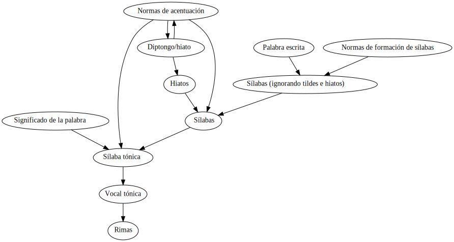

Table of Contents
1. Presentación del problema
El castellano es un idioma transparente, lo que significa que hay una gran relación entre cómo se escribe una palabra y cómo se pronuncia. Se pretenden resolver los siguientes problemas a partir de una palabra escrita:
- Dividir la palabra en sílabas
- Conocer la sílaba tónica de la palabra
- Saber si la palabra rima con otra palabra
Si no te interesa el algoritmo, puedes saltar a cómo usar el código, al repositorio en Github o a la página de ejemplo.
Este es un problema que parece simple a primera vista, pero con una complejidad, interdependencia y cantidad casos particulares que no esperaba encontrarme. El siguiende diagrama muestra la relación entre cada parte del problema. Por ejemplo, El significado de la palabra afecta a cuál es su sílaba tónica.

1.1. Diptongos e hiatos
Varias vocales juntas forman un hiato, y pertenecen a sílabas distintas, si
- Son vocales abiertas, o fuertes: a, e, o. Por ejemplo, es. car . ce . o
- El acento prosódico recae en una vocal cerrada (débil): i, u. Por ejemplo, al . cal . dí . a
- En los demás casos (vocales cerradas y abiertas, o vocales cerradas), las vocales forman un diptongo.
Estas normas se ven afectadas, por tanto, por las normas de acentuación.
1.2. División en sílabas de una palabra
Una palabra se compone de sílabas. En castellano, una sílaba tiene solo un grupo vocálico, que puede ser una sola vocal o varias vocales formando un diptongo (por tanto, los diptongos/hiatos afectan a este problema).
Al grupo vocálico pueden acompañar consonantes como sufijo o prefijo.
1.2.1. División sin importar hiatos/diptongos
Las sílabas en castellano tienen la siguiente estructura general: Posiblemente algunas consonantes, algunas vocales y posiblemente algunas consontantes:
- No todas las consonantes pueden darse al principio de sílaba. Las que pueden darse son:
- Dobles consonantes: ch, rr, ll, dr, tr, ps. No pueden darse otras como dl o tl.
- Cualquier consonante simple
- Pueden ir varias vocales juntas. Según la RAE, una letra h no rompe el grupo vocálico.
- No todas las consonantes pueden darse al final de la sílaba. las que pueden darse son b , c , d , f , g , l , m , n , ns , p , r , rs , s , t , x , y , z
Dada una palabra escrita, estas normas permiten dividirla de varias formas. Por ejemplo, la palabra apeninos podría dividirse como ap-en-in-os, a-pen-i-nos… La forma correcta se consigue aplicando algunas prioridades al extraer las sílabas:
- Una sílaba solo con vocales
- Una sílaba con consonantes y vocales
- Una sílaba con vocales y consonantes
- Una sílaba con consonantes, vocales y consonantes
De esta forma, se utiliza un backtraking extrayendo la siguiente sílaba en el orden anterior, y se considera la primera forma de división encontrada. Por ejemplo:
apeninosa peninos(1)a-pe ninos(1 no es aplicable, se aplica 2)a-pe-ni-no s(1 no es aplicable, se aplica 2)a-pe-ni-no s(no puede aplicarse ninguna regla, backtrack)a-pe-ni-nos(1 y 2 no son aplicables, se aplica 3)
Estas normas generales no funcionan en algunos casos, para los que se utilizan normas especiales:
- la sílaba trans es un prefijo, que no debe separarse: trans-at-lán-ti-co
- Aunque una sílaba puede empezar por ps, solo debe ocurrir a principio de palabra. Si no, palabras como ép-si-lon o sep-sis se interpretarían como é-psi-lon o se-psis
1.2.2. Hiatos
Para localizar los hiatos de una sílaba se siguen las siguientes normas:
- Si solo hay una vocal, no hay hiatos
- Se comprueba si cada par de vocales (puede haber triptongos y vocales separadas por h) es un hiato, con las siguientes normas:
- Una vocal cerrada acentuada al lado de otra vocal forma un hiato
- Dos vocales abiertas forman un hiato
La siguiente tabla muestra todas las posibles combinaciones de un par de vocales:
| vocal 1 abierta | vocal 1 acentuada | vocal 2 abierta | vocal 2 acentuada | Ejemplo | Forma hiato |
|---|---|---|---|---|---|
| Sí | Sí | Sí | Sí | Imposible | |
| Sí | Sí | Sí | No | Imposible | |
| Sí | Sí | No | Sí | Imposible | |
| Sí | Sí | No | No | vendréis | No |
| Sí | No | Sí | Sí | panteón | No |
| Sí | No | Sí | No | pétreo | Si |
| Sí | No | No | Sí | zalacaín | Sí |
| Sí | No | No | No | haití | No |
| No | Sí | Sí | Sí | Imposible | |
| No | Sí | Sí | No | maría | Sí |
| No | Sí | No | Sí | Imposible | |
| No | Sí | No | No | Imposible | |
| No | No | Sí | Sí | camión | No |
| No | No | Sí | No | piar | No |
| No | No | No | Sí | veintiún | No |
| No | No | No | No | ciudad | No |
Como puede verse, hay combinaciones que no se dan en idioma castellano.
En el caso de tres vocales o más, se va probando cada par de vocales. Por ejemplo, en constituía se prueba primero uí y después ía.
1.3. Localización de la sílaba tónica
- El acento (o acento prosódico) es la mayor intensidad que se da a una sílaba dentro de una palabra. Suele ser un aumento de volumen, duración o ambas cosas. Esa sílaba se denomina sílaba tónica.
- La tilde (o acento gráfico) es una indicación gráfica del acento prosódico
Las normas generales de acentuación indican en qué sílaba tiene el acento una palabra escrita, y están diseñadas para minimizar el uso de las tildes. La tilde se coloca sobre la vocal de la sílaba con acento prosódico. Si es un diptongo, se colocará sobre la vocal abierta.
- Palabras monosílabas: no llevan tilde
- Palabras agudas (acento en última sílaba): tendrán tilde si acaban en vocal, n o s.
- Palabras llanas (acento en la penúltima sílaba): tendrán tilde si no acaban en vocal, n o s.
- Palabras esdrújulas y sobreesdrújulas (acento más alla de la penúltima sílaba): tienen tilde siempre
- Tilde diacrítica: se utiliza para distinguir palabras homófonas (que se pronuncian igual), pero con distinto significado.
Este problema se ve afectado por la división en sílabas, y por tanto por los diptongos/hiatos.
Hay que tener en cuenta además otras normas:
- Advervios acabados en mente: conservan la tilde del adjetivo original (tranquilamente)
- Formas verbales con pronombres: conservan la tilde de la forma verbal sin pronombres (haceroslo)
De estas dos últimas normas se deduce que no es posible localizar la sílaba tónica sin conocer el significado de la palabra.
1.4. Rimas
Dos palabras riman si su final suena de forma similar. El final de la palabra incluye a partir de la vocal tónica. El sonido similar puede ser
- Consonante: todas los sonidos coinciden a partir de la vocal tónica
- Asonante: todas las vocales coinciden a partir de la vocal tónica
Hay algunas excepciones a esta norma:
- La sílaba siguiente a la tónica en una esdrújula puede ignorarse. Esto haría que cán . ti . co rimase con zan.co .
- Las vocales no acentuadas de un diptongo (débiles) pueden ignorarse. Esto haría que a. cei . te rimase con pe.ces .
1.4.1. Rima Consonante
Hay que tener en cuenta que la pronunciación varias consonantes distintas puede ser similar o no, como K y C, dependiendo de la vocal a la que se asocien. Para poder comparar las palabras, se realizan las siguientes sustituciones dentro de cada sílaba, en orden de preferencia:
| Si aparece | Se sustituye por |
|---|---|
| gue | ge |
| gué | gé |
| gui | gi |
| guí | gí |
| güe | gue |
| güé | gué |
| güi | gui |
| güí | guí |
| que | ke |
| qué | ké |
| qui | ki |
| quí | kí |
| ce | ze |
| cé | zé |
| ci | zi |
| cí | zí |
| ge | je |
| gé | jé |
| gi | ji |
| gí | jí |
| ch | ch |
| ll | y |
| ya | ya |
| ye | ye |
| yi | yi |
| yo | yo |
| yu | yu |
| yá | yá |
| yé | yé |
| yí | yí |
| yó | yó |
| yú | yú |
| y | i |
| h | |
| v | b |
| c | k |
Posteriormente, se sustituyen las vocales acentuadas por vocales sin acentuar
1.4.2. Rima asonante
Se parte del final de la palabra tenido en cuenta en la rima consonante, y se eliminan todas las consonantes. Para evitar que ma . rí . a rime asonantemente con mar . cial, cada grupo consonántico se transforma en un mismo carácter. De esa forma:
- ma . rí . a termina en ría ➡ i.a
- mar . cial termina en cial ➡ ia
1.5. División de palabra
Al final del renglón, las palabras pueden dividirse con un guión. No todas las posiciones son posibles:
- El guión irá siempre entre sílabas
- El guión no separará vocales, aunque formen un hiato. Esto hace que no importe la acentuación ni la distinción diptongo/hiato en este problema.
- El guión no dejará una vocal aislada al final o al principio de la palabra
2. Implementación
2.1. División en sílabas de una palabra
El siguiente es un ejemplo de uso de la función palabraSinHiatos, que divide una palabra en sílabas sin tener en cuenta los hiatos:
const { palabraSinHiatos } = require( "palabras/corpus-utils.js" ); console.log( palabraSinHiatos("épsilon") ); // => ['ép','si','lon'] console.log( palabraSinHiatos("maría") ); // => ['ma','ría']
const { palabraConHiatos, palabraSinHiatos } = require( "palabras/corpus-utils.js" ); console.log( palabraSinHiatos("maría") ); // => ['ma','ría'] console.log( palabraConHiatos("maría") ); // => ['ma','rí', 'a'] console.log( palabraSinHiatos("constituía") ); // => [ 'cons', 'ti', 'tuía' ] console.log( palabraConHiatos("constituía") ); // => [ 'cons', 'ti', 'tuí', 'a' ]
2.1.1. Normas no contempladas
Hay algunas normas que no pueden aplicarse sin un corpus completo:
- Los prefijos forman sílabas aparte. Por ejemplo interaliado debe silabearse in-ter-a-lia-do, pero con las normas anteriores sería in-te-ra-li-a-do
2.2. Sílaba tónica
Como ya se ha comentado, no es posible encontrar la sílaba tónica sin conocer el significado de la palabra, ya que:
- El sufijo mente no cambia la sílaba tónica del adjetivo que modifica. Además, se mantiene el acento ortográfico del adjetivo original (aunque el adverbio sea una palabra esdrújula). Por ejemplo, de a . gra . da . ble se obtiene a . gra . da . ble . men . te.
- Los pronombres enclíticos, al igual que el sufijo mente, no cambian la sílaba tónica del verbo del que forman parte. Por ejemplo sú . be . me . lo es una palabra sobreesdrújula, ya que su . be es llana.
const { palabraConHiatos, silabaTonica } = require( "palabras/corpus-utils.js" ); const maria = palabraConHiatos("maría") // => ['ma','rí', 'a'] console.log( silabaTonica(maria) ); // => 1 const velozmente = palabraConHiatos("velozmente") // => ['ve','loz','men','te'] console.log( silabaTonica(velozmente) ); // => 1 const percheron = palabraConHiatos("percherón") // => ['per','che','rón'] console.log( silabaTonica(percheron) ); // => 2
2.3. Vocal tónica
const { palabraConHiatos, letraTonica } = require( "palabras/corpus-utils.js" ); const maria = palabraConHiatos("maría") // => ['ma','rí', 'a'] console.log( letraTonica(maria) ); // => 3 const velozmente = palabraConHiatos("velozmente") // => ['ve','loz','men','te'] console.log( letraTonica(velozmente) ); // => 3 const percheron = palabraConHiatos("percherón") // => ['per','che','rón'] console.log( letraTonica(percheron) ); // => 7
2.4. Fachada para las funciones: clase Palabra
Las funciones anteriores pueden utilizarse por separado, pero para facilitar su uso se ha desarrollado la clase Palabra.
- Se accede la la vocal tónica, sílabas, etc. por medio de propiedades, no de funciones o métodos
- Esas propiedades se calculan de forma perezosa (lazy)
Palabra.fromes una factoría que cachea las palabras ya creadas, para mejorar el uso de CPU a cambio de aumentar la memoria usada
2.5. Rimas
Para saber si dos palabras tienen rima consontante, basta con calcular la posición de la vocal tónica de cada una de ellas y comparar si los fonemas asociados a cada letra coinciden a partir de ahí.
const { Palabra } = require( "palabras/palabra.js" ); const maria = Palabra.from("maría"); console.log( maria.sufijoRimaConsonante ) // => ia console.log( maria.sufijoRimaAsonante ) // => i.a const velozmente = Palabra.from("velozmente"); console.log( velozmente.sufijoRimaConsonante ); // => ozmente console.log( velozmente.sufijoRimaAsonante ); // => o.e.e const percheron = Palabra.from("percherón") console.log( percheron.sufijoRimaConsonante ); // => on console.log( percheron.sufijoRimaAsonante ); // => o
Para facilitar el uso, se han desarrollado las funciones rimaAsonanteCon y rimaConsonanteCon
const { rimaConsonanteCon, rimaAsonanteCon } = require( "palabras/rimas.js" ); console.log( rimaConsonanteCon("maría", "arriba") ) // => false console.log( rimaAsonanteCon("maría", "arriba") ) // => true
3. Por hacer
- Calcular las posibles divisiones de palabra al final de línea mediante un guion
- Convertir el código desarrollado en un paquete desplegable en node
4. Enlaces de interés
- https://www.cpimario.com/cm_util.html
- http://archive.drublic.com/css3-auto-hyphenation-for-text-elements/
- http://tulengua.es/es/separar-en-silabas
- https://github.com/mnater/hyphenator
- https://github.com/mnater/Hyphenopoly
- https://github.com/mnater/hyphenator
- https://www.ushuaia.pl/hyphen/?ln=en
- https://dirae.es/palabras/%C3%A9xito